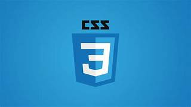
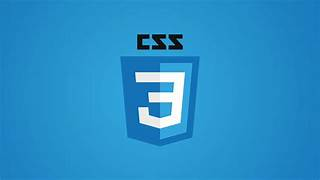
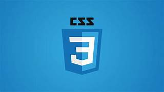

MY SKILLS
 


Hi, I'm G. Aarthi. I'm a passionate Frontend Developer with a strong foundation in HTML, CSS, and JavaScript. I enjoy turning creative ideas into real, user-friendly websites. My focus is on clean design, responsiveness, and smooth user experience. I constantly build projects to sharpen my skills and learn new techniques. I’m excited to grow in the tech field and create meaningful web applications. Explore my work, skills, and projects, and let’s connect to create something amazing together!
I’m G. Aarthi, a highly motivated and enthusiastic Frontend Developer. I have a strong foundation in HTML, CSS, and JavaScript, and I enjoy bringing creative ideas to life through clean and responsive web design. My journey into web development started with curiosity and quickly turned into a deep passion for building things that are both functional and visually appealing. I spend a lot of time experimenting with layouts, animations, and user experience techniques to make websites more engaging. I believe in writing clean, reusable code and continuously improving my skills through hands-on projects. Whether it’s a simple portfolio or a complex web app, I love solving challenges and paying attention to details. I also enjoy learning about backend development to become a well-rounded full-stack developer. Apart from coding, I’m interested in UI design and how users interact with digital products. I'm always open to collaboration and sharing ideas with others in the tech community. My goal is to create meaningful digital experiences that make an impact.

Institution: Sri Saradha College for Women
Year: 2020 - 2023
Company: Ekam AI
Role: Developing the official company website using HTML, CSS, and JavaScript
Status: Ongoing
The Personal Finance Tracker is a web-based application designed to help users manage their finances effectively. It allows users to track their expenses, set monthly budgets, and visualize their spending patterns through interactive charts. The application is built using HTML, CSS, JavaScript, and Chart.js for data visualization.
This MBBS Abroad Platform provides detailed insights into universities, admission requirements, and study benefits. With a modern UI, fast loading, and smooth navigation, it ensures a seamless user experience. A contact form and mobile responsiveness make it easy for students to access information and get assistance.
This is a beautifully designed and responsive Yoga Website that promotes health and wellness. It features various yoga poses, benefits, and training programs, along with an intuitive layout for easy navigation. Users can explore different yoga styles, book sessions, and read expert blogs for a holistic experience.
This is a Gym Website designed to help fitness enthusiasts achieve their health goals with expert guidance. It features multiple pages, including a home page, workout plans, membership details, trainer profiles, and a booking page. Users can explore personalized training programs, track progress, and join a thriving fitness community.
This is a Burger Website designed for food lovers to explore and order delicious, handcrafted burgers. It includes multiple pages such as a home page, menu page, order page, about us, and contact page. Customers can browse a variety of burgers, customize their orders, and enjoy a seamless online ordering experience.
The Personal Finance Tracker is a web-based application designed to help users manage their finances effectively. It allows users to track their expenses, set monthly budgets, and visualize their spending patterns through interactive charts. The application is built using HTML, CSS, JavaScript, and Chart.js for data visualization.